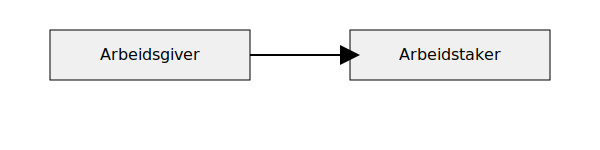
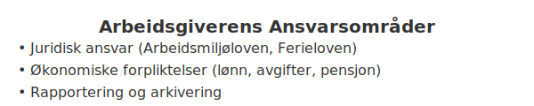

Arbeidsgiver er den juridiske parten i et arbeidsforhold som inngår en avtale om å utføre arbeid mot vederlag. En arbeidsgiver har en rekke juridiske forpliktelser, økonomiske ansvar og må følge spesifikke krav til regnskapsføring. Denne artikkelen gir en helhetlig oversikt over hvem en arbeidsgiver er, hvilke plikter som følger med rollen, og hvordan det håndteres i regnskapet.

Hva er Arbeidsgiver?
Begrepet arbeidsgiver omtaler den part som tilbyr arbeidsytelse, inngår arbeidsavtaler og utbetaler lønn. Arbeidsgiver motiverer og leder arbeidstakere, og har ansvar for blant annet arbeidsmiljø, lønnsutbetalinger og rapportering til myndighetene. Les mer om ulike arbeidsforholdstyper i Hva er Arbeidsforholdstype?.
Juridisk Rolle og Ansvar
Arbeidsgiverens ansvar fremgår av arbeidsmiljøloven, skattelovgivningen og andre relevante lover:
- Sikre et forsvarlig arbeidsmiljø i samsvar med arbeidsmiljøloven.
- Inngå og oppbevare skriftlige arbeidskontrakter.
- Overholde regler for oppsigelse, ferie og arbeidstid.
- Beregne og innbetale arbeidsgiveravgift
- Rapportere lønns- og personalopplysninger via A-meldingen
Økonomiske Forpliktelser
Arbeidsgiver bærer flere direkte kostnader knyttet til lønn og arbeidsforhold. Oversikt over sentrale forpliktelser:
| Forpliktelse | Beskrivelse | Frist |
|---|---|---|
| Registrering i AA-registeret | Meld inn som arbeidsgiver i Arbeidsgiver- og arbeidstakerregisteret | Før første lønnsutbetaling |
| A-melding | Månedlig rapportering av lønn, arbeidsgiveravgift og ytelser | Innen 5. i måneden etter lønnsutbetaling |
| Arbeidsgiveravgift | Beregning og innbetaling av avgift basert på bruttolønn | Løpende innen året etter rapportering |
Regnskapsmessig Behandling
I regnskapet bokføres lønnskostnader som anskaffelseskost, og arbeidsgiveravgift som en separat kostnadskonto. Eksempel på grunnbokpost ved lønnsutbetaling:
Debet: Lønnskostnad
Debet: Arbeidsgiveravgift
Kredit: Bankinnskudd
For full oversikt over regnskapsprinsipper, se Hva er Regnskap?.
Videre Ansvarsområder

Her følger en detaljert oversikt over ytterligere ansvar og forpliktelser for arbeidsgiveren:
Registrering og Identifikasjon
Arbeidsgiver må registrere virksomheten og seg selv i flere offentlige registre før første lønnsutbetaling:
| Register | Formål | Frist |
|---|---|---|
| AA-registeret | Arbeidsgiver- og arbeidstakerregisteret | Før ansettelse |
| Enhetsregisteret (Brønnøysund) | Tildeling av organisasjonsnummer | Ved oppstart av virksomheten |
| NAV B2B (A-ordningen) | Avtale om rapportering til NAV via A-ordningen | Før første A-melding |
Lover og Regelverk
Arbeidsgiveren må følge relevante lover som regulerer arbeidsforhold og regnskap:
| Lov/regelverk | Hovedinnhold | Link til artikkel |
|---|---|---|
| Arbeidsmiljøloven | HMS, arbeidstid og arbeidsmiljø | Arbeidsmiljøloven |
| Ferieloven | Rett til ferie og feriepenger | Feriepenger |
| Bokføringsloven | Dokumentasjon og arkivering | Bokføringsloven |
| Skatteloven | Skattemyndighetenes krav | Hva er Skatteloven? |
Pensjon og Forsikring
Arbeidsgiver er ansvarlig for å tilby obligatorisk tjenestepensjon (OTP) og kan i tillegg velge å dekke andre forsikringsordninger:
- Obligatorisk tjenestepensjon anbefales å avsette minst 2 % av lønn.
- Mulighet for livsforsikring, ulykkesforsikring og gruppelivsforsikring.
- Lovpålagt yrkesskadeforsikring for alle ansatte; se Yrkesskadeforsikring.
Rapportering og Arkivering
Korrekt rapportering og oppbevaring av dokumenter er kritisk:
- A-meldingen: Månedlig rapportering av lønn og arbeidsgiveravgift (se A-meldingen)
- Årsoppgaver: Årlig innlevering av terminoppgaver for arbeidsgiveravgift og lønns- og trekkoppgave
- Arkivering: Oppbevar arbeidskontrakter, lønnskjøringsfiler og rapporter i minst 5 år i henhold til bokføringsforskriften
Oppsummering
En arbeidsgiver har en sentral rolle i norsk arbeidsliv med tydelige juridiske forpliktelser og økonomiske ansvar. Korrekt håndtering av arbeidsavtaler, lønn, arbeidsgiveravgift og rapportering er avgjørende for å sikre lovlighet og effektiv drift.